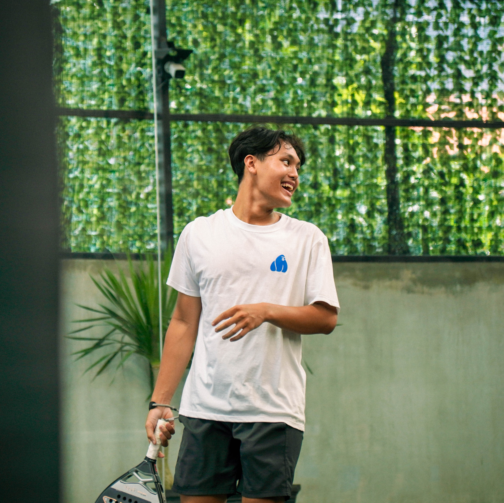

Rinaltra Nabasa S
Informatics Undergraduate · Institut Teknologi Sepuluh Nopember (ITS)
Biography
Undergraduate Informatics student at Institut Teknologi Sepuluh Nopember (ITS) Surabaya. Active as a sports coach in padel and tennis, with dedicated professional interest in photography, cinematography, and digital media production.
Personal Particulars
- Full Name: Rinaltra Nabasa S
- Date of Birth: 08 January 2007
- City of Residence: Surabaya, East Java, Indonesia
- Email: nabasasimanungkalit@gmail.com
- Languages: Indonesian, English
Primary Interests
- Photography (Aviation, Landscape, Sports)
- Cinematography & Documentary Filmmaking
- Padel & Racket Sports
Skills & Competencies
Academic Background
Education
August 2025 — August 2029
Institut Teknologi Sepuluh Nopember (ITS)
Bachelor of Informatics
Activities: ITS Tennis Team
June 2022 — March 2025
Petra 1 Christian Senior High School
Informatics Concentration
Work & Roles
Experience
21 — 23 August
Media Production Volunteer
BCA Jungle Padel Open Vol. 2
Documented tournament play, captured action stills, and supported visual media coverage throughout the event.
April 2026 — Present
Padel Coach
Jungle Padel · Contract (On-site)
Conducting foundational drills, match strategy sessions, and technique refinement for players.
August 2025 — Present
Tennis Coach
Griya Babatan Mukti Tennis Court · Self-employed
Structured training focused on biomechanics, match stamina, and on-court tactical decision making.
January 2020 — Present
Photographer | Videographer
Independent Practice · Surabaya
Providing architectural, aviation, street, and sports photography services with post-processing in Lightroom.
April 2025 — May 2025
Graduation Project Decor Volunteer
Petra 1 Christian Senior High School · Contract
Coordinated visual stage decoration and execution for the Class of 2025 graduation within allocated budget and schedule.
Gallery
Selected Photography
A collection of aviation, street, and architectural captures.